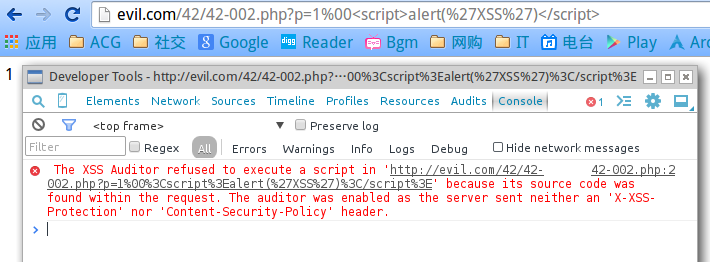

XSS Defense
知己知彼，百战不殆；不知彼而知己，一胜一负；不止彼，不知己，每战比殆。
Overview
虽然大多数人都了解XSS （Cross-Site Scripting）的成因，但是要彻底防止XSS攻击并不容易。因为XSS的表现形式各异，利用方式灵活多变，所以不能以单一特征来 概括所有XSS攻击，这就给XSS漏洞防御带来了极大的困难。
造成这个现象的原因主要有两个方面：
首先，Web浏览器当初的设计是不安全的。浏览器只是用于通过URL来获取并显示Web网页的一种软件工具，网络传输过来的数据有的是浏览器用户需要的、能够看到的，也有的是浏览器不能显示的。这些不能显示的内容可能是对用户来说透明的协议工作内容，也有可能是恶意代码，它们会窃取用户计算机上的隐私，甚至会对计算机设备造成破坏。不可否认，Web浏览器包含了解析和执行JavaScript等脚本语言的能力，这些语言可用来创建各种丰富的功能，但浏览器只会执行，很少能判断出代码片段是否恶意。
其次，大部分Web开发人员都未接受过正规的安全培训，因此没有创建好安全的网站，导致攻击者能利用网站的安全漏洞，注入恶意代码发起攻击。
接下来我们会介绍常见的XSS的防御方法，包括使用XSS Filter、输入过滤输出编码、建立良好的黑白名单策略等。
使用XSS Filter
XSS Filter的作用是过滤用户（客户端）提交的有害信息，从而达到防范XSS攻击的效果。XSS Filter作为防御跨站攻击的主要手段之一，已经广泛应用在各类Web系统之中，包括现今的许多应用软件，例如我使用的版本 40.0.2214.111的Chromium：

但是，XSS本质上是Web应用服务的漏洞，仅仅依赖客户端的保护措施是不够的，解决问题的根本是在Web应用程序的代码中消除XSS安全漏洞。 常用的手段是输入过滤和输出过滤，这两者是有微妙的区别的。输入过滤的所有数据都须经过XSS Filter处理，被确认安全无害后才存入数据库中， 而输出过滤只是应用于写出页面的数据，换言之，如果一段恶意代码早已存入数据库中，若只有采用输出过滤才能捕获非法数据，那么这两种方式在防范持久型XSS的 时候会产生巨大的差异。
输入过滤
“永远不要相信用户的输入”是网站开发的基本常识，对于用户输入一定要过滤。跨站脚本攻击通常是通过一些正常的站内交互途径，例如，发布评论、添加文章等 方式来提交恶意JavaScript的内容，服务器端如果没有过滤或转义掉这些脚本，反而作为内容发布到了页面上，那么当其他用户访问该页面的时候就会运行这些脚本。
所以，当要防范这类攻击的时候，大多数人的想法都是对用户输入的信息进行过滤。例如，针对< > 或者 javascript等敏感字符串进行过滤，倘若发现用户输入的信息 中含有可疑字符串，则对其进行消毒、转义或禁用。输入过滤主要有两类：
输入验证：
输入验证就是对用户提交的信息进行有效的验证，仅接受指定长度范围内的，采用合适格式的内容提交的，阻止或者忽略除此外的其他任何数据。例如，要求用户输入电话号码 就必须是数字格式，而且还要设定长度限制。
输入验证要根据实际情况来设计，下面是一些常见的检测和过滤：
- 输入是否仅仅包含合法的字符；
- 输入字符串是否超过最大长度限制；
- 输入如果为数字，数字是否在指定的范围；
- 输入是否符合特殊的格式要求，如E-mail地址、IP地址等。
数据消毒：
除了在客户端验证数据的合法性，输入过滤中最重要的还是净化有害的输入，例如以下常见敏感字符： < > javascript eval
这时候应该使用白名单政策更安全，但是这样还是远远不够的，为了确保Web应用程序的安全，对 Web 应用的输出也要进行过滤和编码。
输出编码
大多数的 Web 应用程序都存在一个通病，就是会把用户输入的信息完完整整地输出在页面中，这样很容易产生一个XSS。
因此，当需要将一个字符串输出到Web网页时，同时又不确定这个这个字符串中是否包括XSS特殊字符（如<>&'"等），为了确保输出内容的完整性和正确性，可以使用 编码（HTMLEncode）进行处理。HTML编码在防范XSS攻击上起到很大的作用，它主要是用对应的 HTML 实体代替字面量字符，这样做可确保浏览器安全处理可能存着的 恶意字符，将其当作HTML 文档的内容而非结构加以处理。
常见的HTML特殊字符转成字符实体编码：
<转成<>转成>&转成&"转成"'转成'
如果说对输入数据的过滤是针对可疑的信息进行防范，那么针对输出数据进行编码，就是让可能造成危害的信息变成无害的。
Noscript
NoScript是一款免费的开源插件，提供对Firefox或其它基于Mozilla浏览器的额外保护。该插件默认禁止所有脚本，但可以通过自定义设置允许通过的脚本，相当于 使用白名单政策，可以有效增强浏览器的安全性。
WAF
WAF（Web Application Firewall）指 Web应用防火墙，是专门为保护基于 Web 的应用程序而设计的，主要的功能是防范诸如网页木马、XSS以及CSRF等常见的 Web漏洞攻击，在企业环境中深受欢迎。例如最常用的Web服务器之一 Apache就有专门的 WAF模块，安装并启用这个模块可以有效增强 Web 系统的安全性。